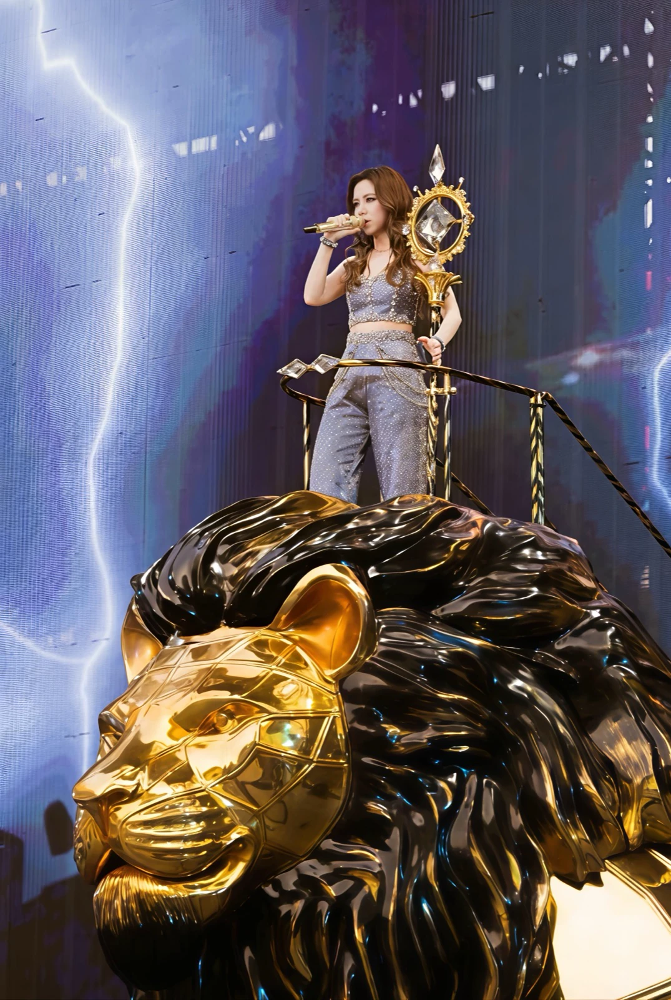

AN IMMERSIVE CONCERT EXPERIENCE
I AM
这一刻，置身灯海。
选一个喜欢的位置，让熟悉的歌在眼前展开。
◎ 戴上耳机，听见现场。
一束光穿过舞台，整片星海为你亮起。
舞台全景与灯海，都在眼前。
I AM GLORIA 2.0 · 演绎场景与概念座位
浏览器未能开启三维显示。请尝试兼容画质，或关闭其他三维页面后重新打开。
正面看全景，侧面看纵深，靠近延伸台看表演。分区为概念位置。
依照现场影像重建光影，在不同的舞台世界里自由观看。
32段约30秒试听，搭配逐曲舞台演绎。非现场录音；场景与节目顺序为概念编排。
按舞台舞美、人物形象、Q版参考和现场照片浏览素材。图片与视频按需加载，保留原来源。
照片只保存在当前设备的这个浏览器，其他人看不到。清除浏览器数据后也会消失。
把属于你的那束光，留在这里。
流畅与兼容模式会减少灯束和粒子。减少动态会停下灯束游动与金纸飘落。
融合 I AM GLORIA 2.0 巡演的舞台元素与公开现场参考，构建一个自由选座的通用概念场馆。连续巨屏、中央走道与菱形前台连接整个现场。座位、尺寸均为概念估算，不作为准确购票视野工具。
大屏融合实拍画面与场景演绎，灯光和人物动作随歌曲变化；节目顺序与动线为创作编排。音乐为约30秒试听，并非演唱会现场录音。曲库仅保留有本地音频的32段试听。
屏幕按歌曲呈现舞美参考与影像，台上是可动的 Q 版舞台形象，随曲目切换造型。巡演标题悬在场馆正上空，轻触散成环绕头顶的城市星群，再触重新汇聚；心形光路沿观众区亮起，汇向宝石台再向外散开。这些互动为概念编排。本体验与歌手、主办方及票务平台无隶属关系。